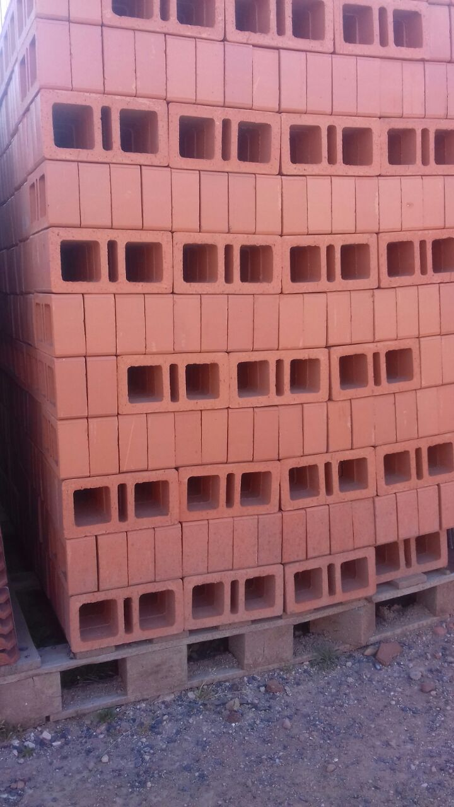
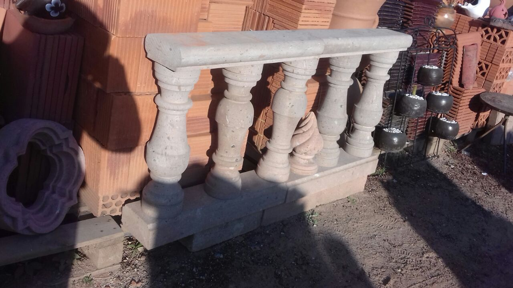
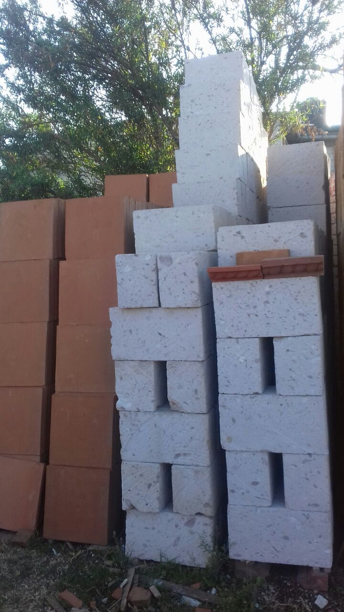
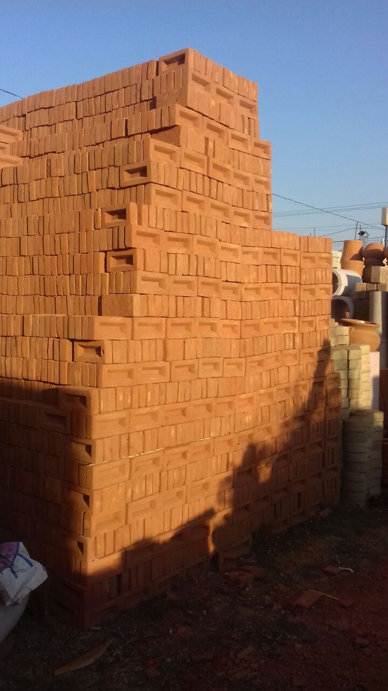
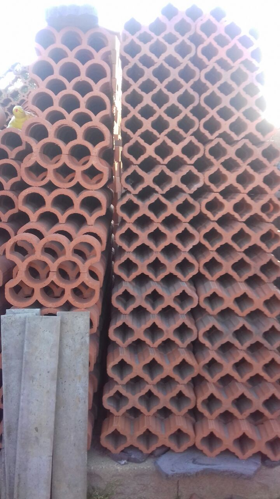
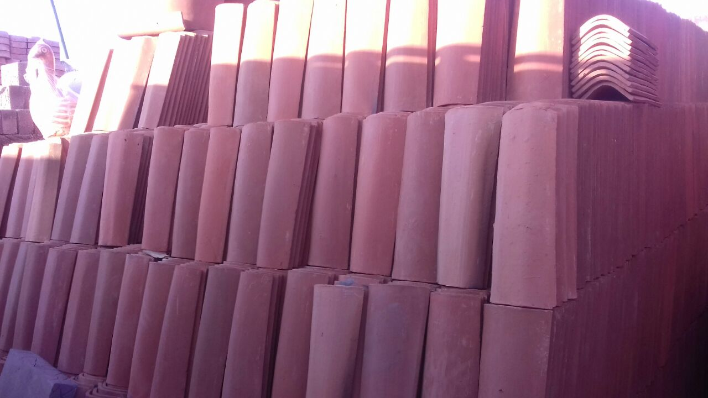
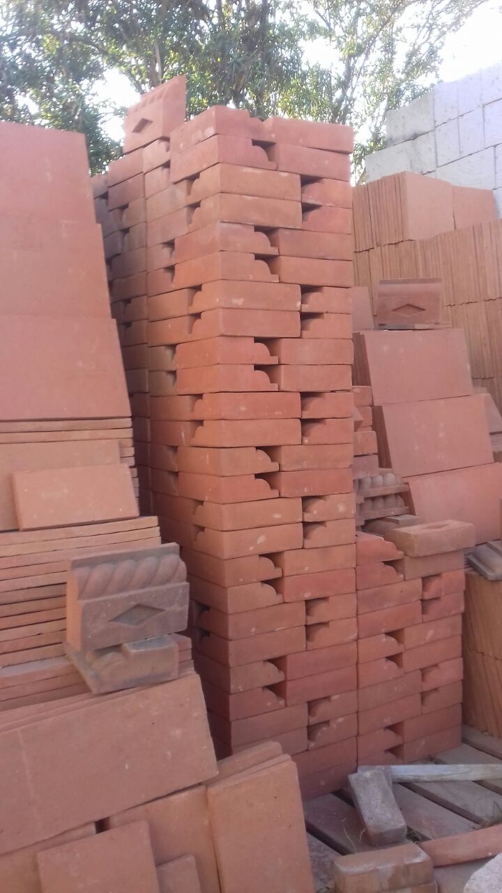

.MUESTRARIO.
LOS MATERIALES QUE TENEMOS SON TRAIDOS DE VARIOS LUGARES, LAS MASETAS DE SAN MATIO , LA CANTERA DE TOLUCA , EL BLOC DE LAS BLOQUERAS DE JILOTEPEC EN SEGUIDA LE MOSTRAMOS ALGUNOS DE NUESTROS MATERIALES

TABIQUE HUECO,LABRILLO, SOLERA , BLOC

TABIQUE, CELOCIA , TEJA CUADRADA

PECHO
EL CONSTRUCTOR